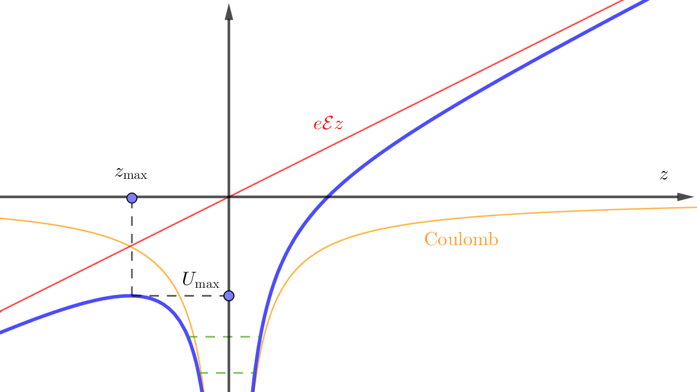

Information
Beyond the Quadratic Stark Effect (Perturbation Theory)
We next consider the stability of atoms in strong electric field and field ionization.
Mixture of the states in to the ground state
$$\begin{align} \sum_m |m^{(0)} \rangle \frac{\langle m^{(0)}|H'|n^{(0)} \rangle}{E_n^{(0)} - E_m^{(0)}} \end{align}$$For perturbation theory, mixture coefficient is small, that is
$$\begin{align} \left| \frac{\langle m^{(0)}|H'|n^{(0)} \rangle}{E_n^{(0)} - E_m^{(0)}} \right|\ll 1 \end{align}$$in our case
$$\begin{align} \left| \frac{\langle i |e r \mathcal{E}| g \rangle}{E_i - E_g} \right|\ll 1 \\ \Rightarrow\mathcal{E} \ll \left| \frac{E_i - E_g}{e\langle i | r | g \rangle} \right| \end{align}$$where $|i\rangle$ is the nearest state of oppsite parity to $|g\rangle$ . $\langle i | r | g \rangle$ is on the order Bohr radius $a_0$ because there are no other length scales in this problem. For hydrogen, $E_n = -\frac{1}{2}\frac{e^2}{a_0}\frac{1}{n^2}$ , so $E_i - E_g \sim e^2/ a_0$ . Then we gte an order of critical electric field beyond which the perturbation will be invalid
$$\begin{align} \mathcal{E}_{\mathrm{crit}} \sim \frac{e}{a_0^2} \approx 5\times 10^9 \mathrm{V/cm}? \\ (\frac{1.602\times 10^{-19} \times 2.998\times 10^9 \mathrm{Fr}} { \left(5.292\times 10^{-11} \times 10^2 \mathrm{cm}\right)^2} \approx 1.7\times 10^7 \mathrm{V/cm}?) \end{align}$$is $1,000$ times larger than laboratory electric fields.
For other atoms(not hydrogen)
$$\begin{align} \langle n, l + 1 | \vec{r} | n, l\rangle \sim n^2 a_{0} \\ \Delta E = E_{n, l + 1} - E_{n, l} = \frac{ - R_H}{(n - \delta_{l + 1})^2} - \frac{ - R_H}{(n - \delta_{l})^2} \\ (n\to\infty \mathrm{expand})\approx 2 R_H (\delta_{l + 1} - \delta_l) /n^3 \end{align}$$(a minus sign?) where $\delta_l$ is the quantum defect. So $R_H = \frac{e^2}{a_0}$
$$\begin{align} \mathcal{E}_{\mathrm{crit}} \sim \frac{\Delta E}{e \langle \mathrm{r}\rangle} = \frac{e^2}{a_0} \frac{1}{e a_0} \frac{\delta_{l + 1} - \delta_l}{n^5} \end{align}$$$\delta_l < 10^{-5}$ for $l > l_{\mathrm{core}} + 2 , n>7$ , $\mathcal{E}_{\mathrm{crit}} < 1 \mathrm{V/cm}$ . Where $l_{\mathrm{core}}$ is angular momentum of the core. $n^{5}$ , so, for large $n$ , $\mathcal{E}_{\mathrm{crit}}$ can be reached! An example, Rydberg atom. Highly excited states of atoms behave very differently from ground state atoms. Ref Phys. Rev. Lett 41, 103-107 (1978)
Field ionization

$$\begin{align} U_{\mathrm{total}} =& - \frac{e^2}{|z|} + e\mathrm{E} z \\ z_{\mathrm{max}} =& - \left| \frac{e}{\mathcal{E}} \right|^{1/2} \\ U_{\mathrm{max}} =& -2 e^{3/2} \mathcal{E}^{1/2} \end{align}$$if we assume $U_{\mathrm{max}} = -E_{\mathrm{Binding}} = - \mathrm{Ryd}/n^2$ , then (in atom units $e/a_0$)
$$\begin{align} \mathcal{E}_{\mathrm{ION}} = \frac{1}{16 n^4} \end{align}$$Application: $100%$ detection efficiency for atoms, Phys. Rev. Lett. 76, 1800 (1996)
Atoms in oscillating electric fields (AC stack effect)
Use time dependent perturbation theory. An oscillating electric field
$$\begin{align} \vec{\mathcal{E}}(t) =& \mathcal{E} \hat{e} \cos(\omega t) \\ H' =& - \vec{D} \cdot \vec{\mathcal{E}}(t) = - \frac{1}{2} \left( e^{\mathrm{i}\omega t} + e^{- \mathrm{i}\omega t} \right) \mathcal{E} \hat{e} \cdot \vec{D} \end{align}$$the we use time dependent perturbation theory (Sakurai (5.7.17))
$$\begin{align} |\psi(t) \rangle = \sum_k a_k(t) e^{- \mathrm{i} \omega_k t} |k\rangle \end{align}$$ $$\begin{align} a_k^{(1)} = \frac{\mathcal{E}}{2 \hbar} \langle k | \hat{e}\cdot \vec{D} | g\rangle \left[\frac{e^{\mathrm{i} (\omega_{kg} +\omega) t} - 1}{\omega_{kg} + \omega} + (\omega \leftrightarrow -\omega) \right] \end{align}$$the transmit contribution $1$ , due to the sudden switch on, will damps out.
We set $\hat{e} = \hat{z}$ , $\vec{D} = - e z \hat{z}$ . Consider the ground state $|g\rangle$ , then
$$\begin{align} |g^(0) \rangle = \sum_k \delta_{kg} e^{- \mathrm{i} \omega_k t}| k\rangle = e^{- \mathrm{i}\omega_g t} | g\rangle \end{align}$$the indeuced dipole(drop the sudden switch on term)
$$\begin{align} &\left( \langle g^{(0)}| + \langle g^{(1)}| \right) D \left( |g^{(0)}\rangle + | g^{(1)}\rangle \right) \\ =& 2 \mathrm{Re} \langle g^{(0)} | D | g^{(1)} \rangle \\ =& 2 \mathrm{Re} \sum_k \langle g | D | k \rangle a_k^{(1)}(t) e^{-\mathrm{i}\omega_kt} e^{\mathrm{i}\omega_gt}\\ =& \frac{e^2}{\hbar} \mathrm{Re}\sum_k |\langle k | z| g\rangle|^2 \left[ \frac{e^{\mathrm{i} \omega t} }{\omega_{kg} + \omega} + (\omega \leftrightarrow -\omega) \right] \mathcal{E} \\ =& \frac{e^2}{\hbar} \mathrm{Re}\sum_k |\langle k | z| g\rangle|^2 \cdot 2 \frac{\omega_{kg}}{\omega_{kg}^2 - \omega^2} \cdot \cos (\omega t) \mathcal{E} \\ =& \alpha(\omega) \cdot \cos (\omega t) \mathcal{E} \end{align}$$where
$$\begin{align} \alpha (\omega) \equiv \frac{e^2}{\hbar} \mathrm{Re}\sum_k |\langle k | z| g\rangle|^2 \cdot 2 \frac{\omega_{kg}}{\omega_{kg}^2 - \omega^2} \end{align}$$it is easy to show that $\alpha (0)$ is the DC result.
About AC Stark shift, we have 3 poinst to discuss:
- relation to dressed atom
- oscillator strength
- index of refraction
Relation to dressed atom
the energy shift of DC Stark effect is
$$\begin{align} \Delta E = - \frac{1}{2} \alpha(\omega) \bar{\mathcal{E}^2(t)} \end{align}$$where $\bar{\mathcal{E}^2(t)}$ means time average, then contribute a factor 2
$$\begin{align} \Delta E =& - \frac{1}{4} \alpha(\omega) \mathcal{E}^2 \\ =& - \frac{1}{4} \frac{2e^2}{\hbar} |\langle 1 | z| 2\rangle|^2 \frac{\omega_{12}}{\omega_{12}^2 - \omega^2} \mathcal{E}^2 \\ =& - \frac{\hbar}{4} \omega_R^2 \left[ \frac{1}{\delta} + \frac{1}{2\omega - \delta} \right] \end{align}$$where Rabi frequency $\hbar^2 \omega_R^2 = e^2|\langle 1 | z| 2\rangle|^2 \mathcal{E}^2$ , detuning $\delta = \omega_{12} - \omega$ . The second term is called Bloch–Siegert shift . This looks very similar to time-independent perturbation theory, those are two term with detuning $\delta, -(2\omega -\delta)$ absorb a photon and emit a photon correspondingly. This can be derived using the quantized EM field (photons) picture.
- photon number states $\rightarrow$ time independent perturbation theory
- coherent state $\mathcal{E} \cos(\omega t)$ $\rightarrow$ time dependent perturbation theory
Oscillator strength
Compare our result (AC polarizability of atom) to a classical HO(harmonic oscillator), with charge $q_k$ , mass $m_k$ , frequency $\omega_k$ .
Drivien by electric field $\mathcal{E} \cos(\omega t)$ :
For a classical HO:
\begin{align} D_z(\omega, t) = \mathcal{E} q_k z_q \end{align} where $z_{q}$ can be solved by classical mechanics of a driven oscillator, so \begin{align} D_z(\omega, t) = \mathcal{E} \frac{q_k^2}{m(\omega_k^2 - \omega^2)} \cos (\omega t) \end{align}
For a atom
\begin{align} D_z(\omega, t) = \sum_k f_{kg} \frac{e^2}{m(\omega_k^2 - \omega^2)} \mathcal{E}\cos(\omega t) \end{align} where oscillation strength defined as \begin{align} f_{kg} \equiv \frac{2m}{\hbar} \omega_{kg} |\langle k| z | j\rangle|^2 \end{align}
Atom response as a set of classical oscillators with an effective chrege
$$\begin{align} q_k^2 = f_{kg} e^2 \end{align}$$For oscillation strength
- classical correspondance
- Thomas–Reiche–Kuhn sum rule: $\sum_k f_{kg} = 1$
- it's a dimensionless parameter
For hydrogen, $1s \to 2p$ , $f = 0.4126$
We can also write the matrix element in terms of oscillation strength
$$\begin{align} |\langle k| z | j\rangle|^2 = f_{kg} \frac{1}{2} \cdot\frac{\hbar}{2m}\cdot \frac{1}{\omega_{kg}} \end{align}$$where $\frac{\hbar}{2m}$ is the compton wave length of electron, $\frac{1}{\omega_{kg}}$ is the photon wave length.
Index of refraction
...
ref Jackson (10.146)
Reference
- Field-Ionization Processes in Excited Atoms Michael G. Littman, Michael M. Kash, and Daniel Kleppner, Phys. Rev. Lett. 41, 103 – Published 10 July 1978
- Quantum Rabi Oscillation: A Direct Test of Field Quantization in a Cavity M. Brune, F. Schmidt-Kaler, A. Maali, J. Dreyer, E. Hagley, J. M. Raimond, and S. Haroche, Phys. Rev. Lett. 76, 1800 – Published 11 March 1996 (S. Haroche 2012 Nobel physics prize)
- Jackson, J. D. Classical electrodynamics. (Wiley, 1999)
- Jun John Sakurai, Jim Napolitano, Modern Quantum Mechanics. (Cambridge University Press, 2017)
- Wikipedia: Rabi frequency
- Wikipedia: Bloch–Siegert shift
- Wikipedia: Oscillator strength